require("https://cdn.jsdelivr.net/npm/juxtaposejs@1.1.6/build/js/juxtapose.min.js")
.catch(() => null)
TL;DR
In this article you will learn;
Interpreting effect size when the response variable is categorical
Plotting model output using the
fmodel()function from the{statisticalModeling}packageInteraction terms
Polynomial regression
Total change and partial change
Interpreting the R-squared value in terms of model output and residuals
Bootstrapping technique to measure the precision of model statistics
Scales and transformation
- Log transformation
- Rank transformation
Collinearity
1 Prologue
This tutorial serves as a sequel to the tutorial post: Introduction to statistical modelling in R. In this tutorial, you will gain knowledge in intermediate statistical modelling using R. You will learn more about effect sizes, interaction terms, total change and partial change, bootstrapping and collinearity.
2 Making life easier
Please install and load the necessary packages and datasets which are listed below for a seamless tutorial session. (Not required but can be very helpful if you are following this tutorial code by code)
# Libraries used in this tutorial
install.packages('NHANES')
install.packages('devtools')
devtools::install_github("dtkaplan/statisticalModeling")
install.packages('mosaicData')
install.packages('mosaicModel')
install.packages('Stat2Data')
install.packages('cherryblossom')
install.packages("tidyverse")
install.packages("mosaic")
# Loading the libraries
tutorial_packages <- c("cherryblossom", "mosaicData", "NHANES",
"Stat2Data", "tidyverse", "mosaic", "mosaicModel", "statisticalModeling")
lapply(tutorial_packages, library, character.only = TRUE)
# Datasets used in this tutorial
data("NHANES") # From NHANES
data("SwimRecords") # From mosaicData
data("Tadpoles") # From mosaicModel
data("HorsePrices") # From Stat2Data
data("run17") # From cherryblossom
data("Oil_history") # From statisticalModeling
data("SAT") # From mosaicData3 Effect size when response variable is categorical
In the last tutorial, we learned how to calculate the effect size for an explanatory variable. To recall, we learned that;
| Exploratory variable type | Effect size | Error |
|---|---|---|
| Numerical | Rate of change (slope) | Mean of the square of the prediction error (m.s.e) |
| Categorical | Difference (change) | Likelihood value |
So depending on the nature of the exploratory variable, the nature of the effect size will also change. For a numerical exploratory variable, the effect size is represented as the slope of the line, which represents the rate of change. For a categorical response variable, the effect size is represented as the difference in model output values, when the variable changes from one category to the other.
We also learned that, for a categorical response variable, it’s helpful to represent the model output as probability values rather than class values. Therefore, for calculating errors, if we have a numerical response variable then the error metric is the mean of the square of the prediction error and for a categorical response variable, the error would be the likelihood value. We saw in detail how to find each of them.
But what we did not calculate back then was the effect size, if we had a categorical response variable. So what intuition would effect size make here for this case? Let us find out.
We will be using the NHANES dataset from the {NHANES} package in R, the same one we saw last time while learning to interpret the recursive partitioning model plots. Back then, our exploratory analysis found that depression is having a strong association with the interest in doing things on a given day. Let us build that model using the rpart() function. Here the model will have Depressed as the response variable and LittleInterest as the explanatory variable. Please note that here both the variables are categorical.
The levels for Depressed are; “None” = No sign of depression, “Several” = Individual was depressed for less than half of the survey period days, and “Most” = Individual was depressed more than half of the days.
The levels for LittleInterest are also similar to that of Depressed; “None”, “Several” and “Most”, and are analogous to levels of Depressed.
if (!require(NHANES)) install.packages('NHANES')
if (!require(rpart)) install.packages('rpart')
if (!require(devtools)) install.packages('devtools')
if (!require(statisticalModeling)) devtools::install_github("dtkaplan/statisticalModeling")
# Loading libraries
library(NHANES)
library(rpart)
library(statisticalModeling)
# Building the recursive partitioning model
model_rpart <- rpart(Depressed ~ LittleInterest, data = NHANES)
# Calculating the effect size
effect_size_rpart <- effect_size(model_rpart, ~ LittleInterest)
# Printing the effect size
effect_size_rpartAll right, we got the effect size values and they are given in two columns; ‘change.None’ and ‘change.Several’. Since our explanatory variable is categorical, effect size values with a categorical response variable give the change in probability values. Here, notice that the effect size is calculated as the difference when the response variable is changing its category from ‘None’ to ‘Several’. That difference is the probability difference from the base value, which is zero.
To make more sense, imagine we get an effect size value of zero, in both the columns, in the above case. This means that when the level of little interest changes from ‘None’ to ‘Several’, there is no increase or decrease in the probability of depression is ‘None’ or ‘Several’. This means, that if a person is having no depression, changing little interest from ‘None’ to ‘Several’ will not evoke a change in that person’s depressed state. Thus zero is taken as the base value.
Now let us look at the actual effect size values we got. As the level of little interest is changing from ‘None’ to ‘Several’, we get a probability difference of -0.4466272 = ~ 0.45 for depression is ‘None’. This means that there is a reduction of 45% in the base value of probability. In other words, the person is 45% less likely to have depression set to ‘None’. Likewise, in the same notion, the person is 36% more likely to have a depressed state of ‘Several’, when little interest changes from ‘None’ to ‘Several’. I hope this was clear to you.
Now, let us look at the case when, again, our response variable is categorical but this time, our explanatory variable is numerical.
Let us make another recursive partitioning model. We will have SmokeNow as the response variable and our explanatory variable will be BMI, which denotes the body mass index of the participants. The SmokeNow variable denotes smoking habit and has two levels; “Yes” = smoked 100 or more cigarettes in their lifetime., and “No” = did not smoke 100 or more cigarettes.
if (!require(NHANES)) install.packages('NHANES')
if (!require(rpart)) install.packages('rpart')
if (!require(devtools)) install.packages('devtools')
if (!require(statisticalModeling)) devtools::install_github("dtkaplan/statisticalModeling")
# Loading libraries
library(NHANES)
library(rpart)
library(statisticalModeling)
# Building the recursive partitioning model
model_rpart <- rpart(SmokeNow ~ BMI, data = NHANES)
# Calculating the effect size
effect_size_rpart <- effect_size(model_rpart, ~ BMI)
# Printing the effect size
effect_size_rpartLooks like we got the effect size values as zero. Going by our previous notion, this means that when BMI is changed from 26 to 33, there is no change in smoking habit. Does this mean that BMI has no relationship with the smoking habit?
Before we conclude, let us try a different model architecture. We learned about logistic modelling last time. Let us build a model using it for the same question.
if (!require(NHANES)) install.packages('NHANES')
if (!require(devtools)) install.packages('devtools')
if (!require(statisticalModeling)) devtools::install_github("dtkaplan/statisticalModeling")
# Loading libraries
library(NHANES)
library(statisticalModeling)
# Building the logistic model
model_logistic <- glm(SmokeNow == "No" ~ BMI, data = NHANES, family = "binomial")
# Calculating the effect size
effect_size_logistic <- effect_size(model_logistic, ~ BMI)
# Printing the effect size
effect_size_logisticWe got a very small effect size value but a non-zero value. Let us try plotting both models. We will use the fmodel() function in the {statisticalModeling} package to easily plot the model. Use the slider to view between the plots.
# Plotting both recursive partitioning model
fmodel(model_rpart) + ggplot2::theme_bw() +
ggplot2::labs(title = "SmokeNow ~ Age (recursive partitioning model)")
# Plotting both logistic model
fmodel(model_logistic) + ggplot2::theme_bw() +
ggplot2::labs(title = "SmokeNow ~ Age (logistic model)")# Plotting both recursive partitioning model
fmodel(model_rpart) + ggplot2::theme_bw() +
ggplot2::labs(title = "SmokeNow ~ Age (recursive partitioning model)")
# Plotting both logistic model
fmodel(model_logistic) + ggplot2::theme_bw() +
ggplot2::labs(title = "SmokeNow ~ Age (logistic model)")
Please note that the fmodel() function, while plotting for the recursive partitioning model takes in the ‘first’ level in the variable. You can easily check which level is represented in the y-axis by checking the level order.
library(NHANES)
# Checking levels
levels(NHANES$SmokeNow)[1] "No" "Yes"The level “No” will be represented in the y-axis for the recursive partitioning model plot. Therefore for increasing y-axis values, the probability of not smoking will increase.
After comparing both the plots you can quickly notice that the plot for the recursive partitioning model shows step-wise change or sudden change and for the logistic model plot, the increase is gradual. Interestingly the plot shows that in higher BMI groups, i.e. in groups of obese people, a smoking habit is uncommon. Anyway, in the recursive partitioning model plot, there is a sudden increase in y-axis values between 20 and 30 in the axis. Let us calculate the effect size of both models at this range.
# Calculating the effect size for recursive partitioning model
effect_size_rpart <- effect_size(model_rpart, ~ BMI, BMI = 20, to = 10)
# Printing the effect size for recursive partitioning
effect_size_rpart# Calculating the effect size for logistic model
effect_size_logistic <- effect_size(model_logistic, ~ BMI, BMI = 20, to = 10)
# Printing the effect size for logistic
effect_size_logisticNote how the effect size for the recursive partitioning model is higher as compared to the logistic model. This is evident from the graph as the slope changes much faster at the given range of x-axis values for the recursive partitioning model as compared to the logistic model. Thus, recursive partitioning works best for sharp, discontinuous changes, whereas logistic regression can capture smooth, gradual changes.
Now coming back to interpreting the values, let’s take the case we just discussed. Let us take the effect sizes in the recursive partitioning model. Here, as BMI changes from 20 to 30, there is a 1.8% increased chance that the smoking habit drops. Also ass the response variable is dichotomous, the opposite happens for the other case; 1.8% reduced chance that smoking habit is seen. With such low chances, BMI might not have any association with smoking habit at that particular range of the x-axis. values.
4 Plotting the model output
With the help of the fmodel() function in the {statisticalModeling} package, we can easily plot the model outputs as a plot. Let us plot some plots.
We will again use the NHANES dataset from the {NHANES} package in R. We will DiabetesAge as the response variable and see if it has any association with Age. The Diabetes describes the participant’s age at which they were declared diabetic.
# Loading libraries
library(NHANES)
library(statisticalModeling)
# Building the logistic model
model_logistic <- glm(Diabetes ~ Age, data = NHANES, family = "binomial")
# Plotting the graph
fmodel(model_logistic) + ggplot2::theme_bw() +
ggplot2::labs(title = "Diabetes ~ Age (logistic model)")
We get a rather unsurprising graph. As age increases, the risk of getting diabetes increases. Let us add more variables to the model and plot them one by one. Let us add the following variables; Gender, Depressed and Education.
# Loading libraries
library(NHANES)
library(statisticalModeling)
# Building the logistic model (adding gender)
model_logistic <- glm(Diabetes ~ Age + Gender, data = NHANES, family = "binomial")
# Plotting the graph
fmodel(model_logistic) + ggplot2::theme_bw() +
ggplot2::labs(title = "DiabetesAge ~ Age + Gender (logistic model)")
The addition of the third variable introduced the colour aesthetic to the plot. Let us add another variable.
# Loading libraries
library(NHANES)
library(statisticalModeling)
# Building the logistic model (adding depressed state)
model_logistic <- glm(Diabetes ~ Age + Gender + Depressed, data = NHANES, family = "binomial")
# Plotting the graph
fmodel(model_logistic) + ggplot2::theme_bw() +
ggplot2::labs(title = "DiabetesAge ~ Age + Gender + Depressed (logistic model)")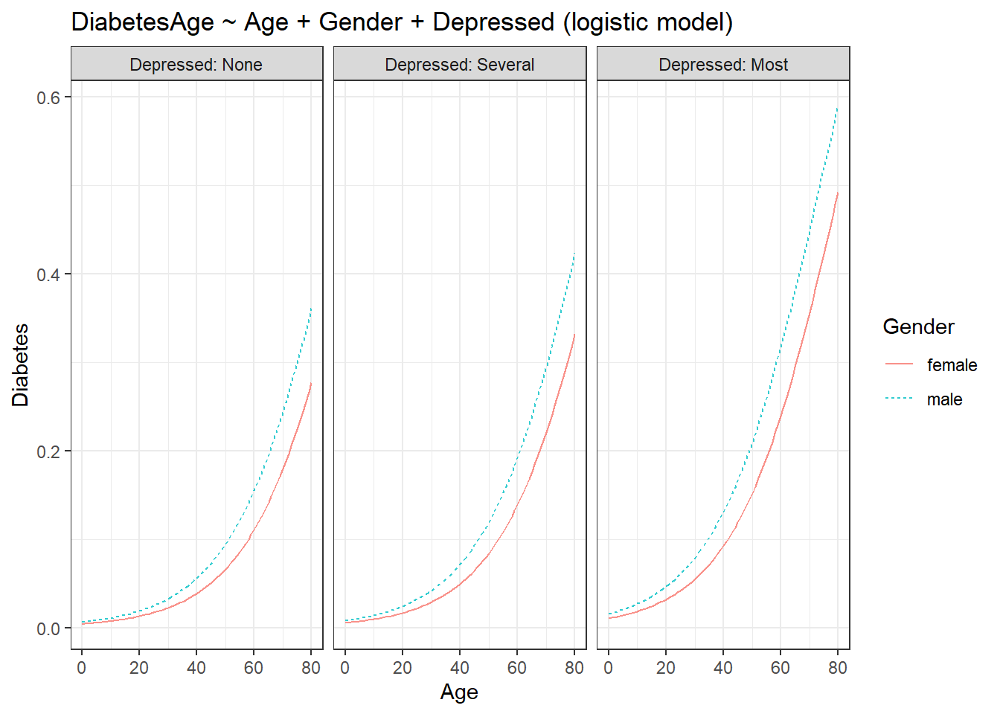
Adding a fourth variable faceted the plot into the levels of the fourth variable. Let us add one last variable.
# Loading libraries
library(NHANES)
library(statisticalModeling)
# Building the logistic model (adding Education)
model_logistic <- glm(Diabetes ~ Age + Gender + Depressed + Education,
data = NHANES, family = "binomial")
# Plotting the graph
fmodel(model_logistic) + ggplot2::theme_bw() +
ggplot2::labs(title = "DiabetesAge ~ Age + Gender + Depressed + Education (logistic model)")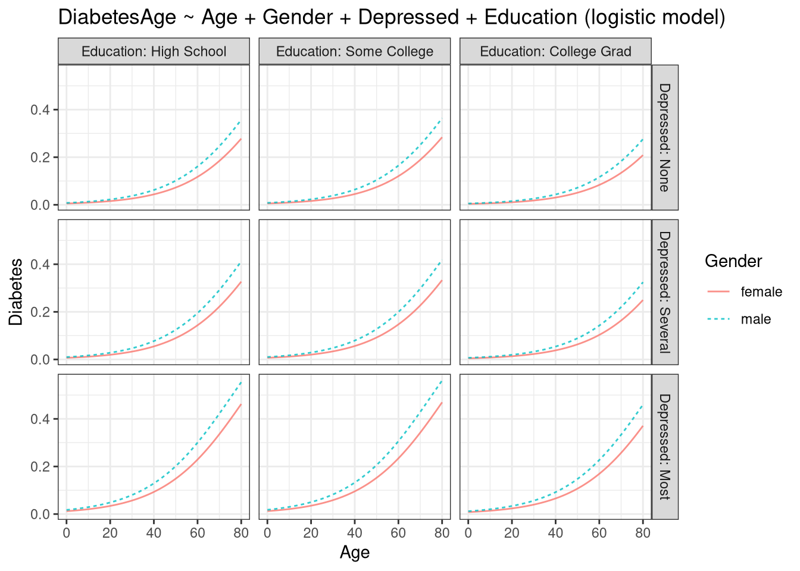
The plot undergoes another layer of faceting. Now we get a rather complex plot as compared to the plot with just one explanatory variable. The plot shows some interesting info. Males are more prone to become diabetic as compared to females in all the groups. For college graduates who have no depression, both sexes have a reduced chance of having diabetes at younger ages as compared to all other groups. People with high school level of education and college level education have the most chance of becoming diabetic out of all groups. I leave the rest of the interpretations to the readers.
In summary, the fmodel() function syntax with four explanatory variables would be;
fmodel(response ~ var1 + var2 + var3 + var4, data = dataset)Here, the response variable will always be plotted on the y-axis. The var1 will be plotted on the x-axis and will be the main exploratory variable that we are interested in. The var2 will assume the colour aesthetic. The var3 and var4 will invoke faceting. Therefore we have;
| Variable | Plot component |
|---|---|
| var1 | y-axis |
| var2 | colour |
| var3 | facet |
| var4 | facet |
5 Interactions among explanatory variables
Till now, when making models, we assumed that our explanatory variables are independent of each other, i.e. their effect sizes are independent of each other. But often this is not the case in real life, we can have instances where the effect size of one variable changes with the other explanatory variables. When this happens, we say that both of those variables are interacting with each other.
To denote interacting terms in the formula, instead of a + sign, we use a *.
Let us see it with an example. We will use the SwimRecords dataset from the mosaicData package in R. The dataset contains world records for 100m swimming for men and women over time from 1905 through 2004. We will build a linear model, using time as the response variable and, year and sex as the explanatory variable. Here time denotes the time of the world record.
if (!require(mosaicData)) install.packages('mosaicData')
library(mosaicData)
library(statisticalModeling)
# Building the linear model
model_lm <- lm(time ~ year + sex, data = SwimRecords)
# Plotting the model
fmodel(model_lm) + ggplot2::theme_bw() +
ggplot2::labs(title = "time ~ year + sex (linear model)")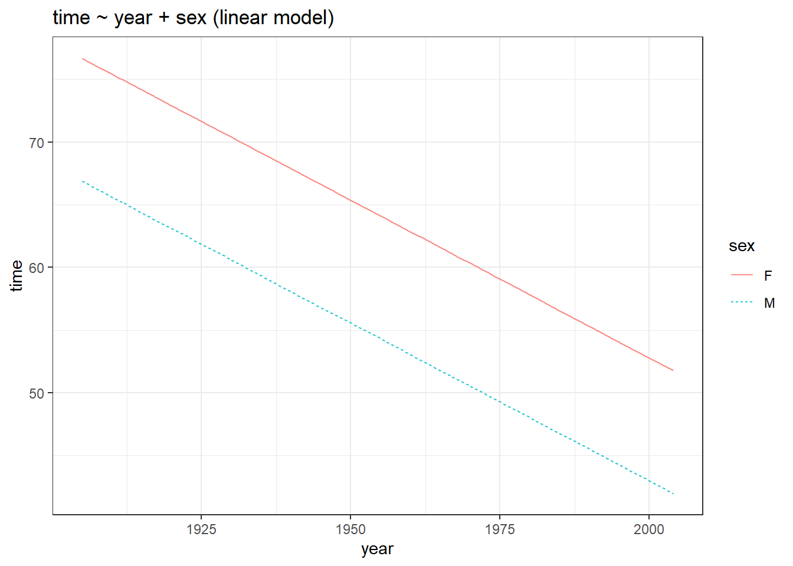
From the graph, you can see that the slopes for both the lines are decreasing. This means that as years progressed, the world record times for both the sexes reduced. Also, men’s record time is faster compared to women’s. What happens to this plot if we introduce an interaction between year and sex?
if (!require(mosaicData)) install.packages('mosaicData')
library(mosaicData)
library(statisticalModeling)
# Building the linear model
model_lm_int <- lm(time ~ year * sex, data = SwimRecords)
# Plotting the model
fmodel(model_lm_int) + ggplot2::theme_bw() +
ggplot2::labs(title = "time ~ year * sex (linear model)")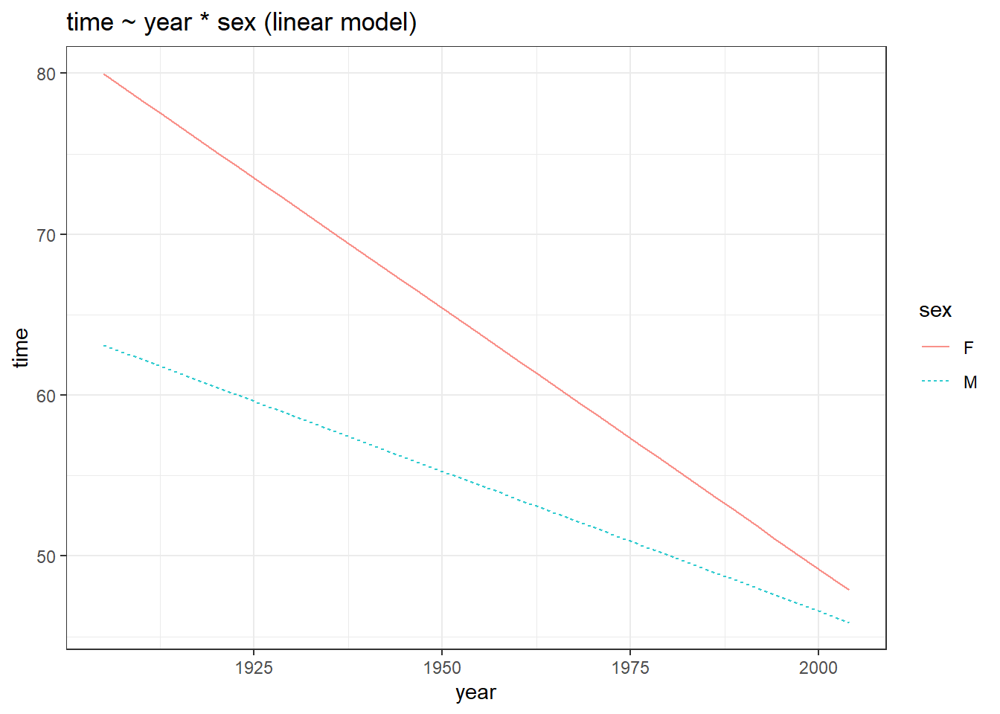
The introduction of interacting terms seems to converge the two lines. For better comparison, use the slider to compare the plots as given below.
if (!require(mosaicData)) install.packages('mosaicData')
library(mosaicData)
library(statisticalModeling)
# Building the linear model
model_lm <- lm(time ~ year + sex, data = SwimRecords)
# Plotting the model
fmodel(model_lm) + ggplot2::theme_bw() +
ggplot2::labs(title = "time ~ year + sex (linear model without interaction)")
# Building the linear model with interaction term
model_lm_int <- lm(time ~ year * sex, data = SwimRecords)
# Plotting the model
fmodel(model_lm_int) + ggplot2::theme_bw() +
ggplot2::labs(title = "time ~ year * sex (linear model with interaction)")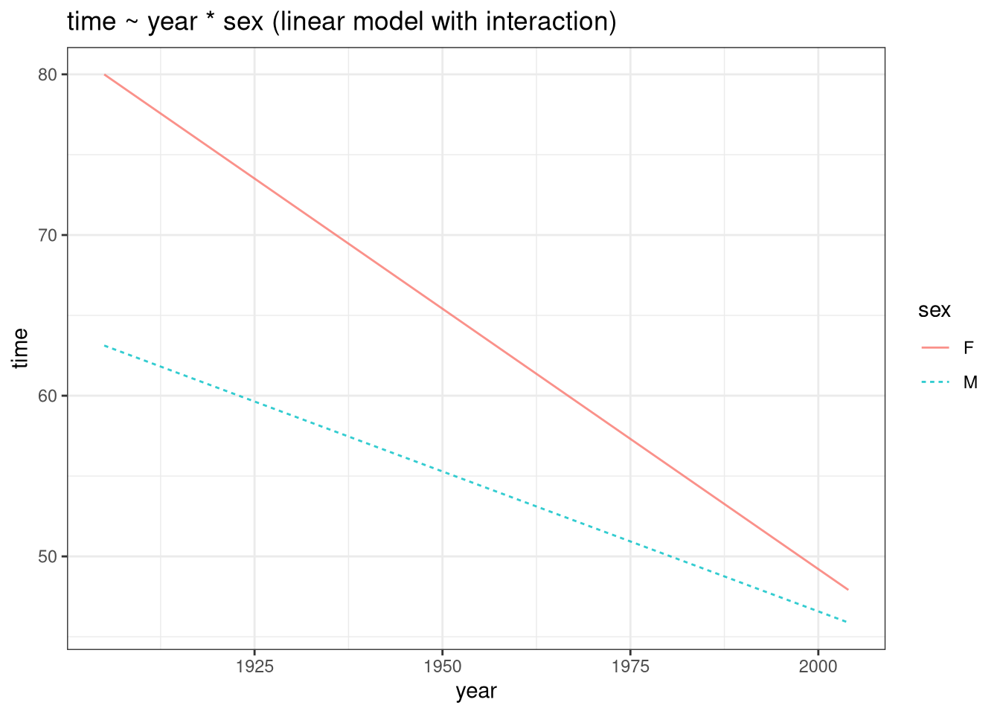
We get some interesting results. First of all, compared to the plot without the interaction term, the slope changes for both the sexes, in the plot with interaction terms. Also, the lines are not parallel when interaction terms are introduced, this is direct evidence showing that both year and sex variables are truly interacting with each other. This is why with increasing years, the gap between the lines decreased, indicating a reduced effect size of sex with increasing years.
To see if this interaction term makes the model better, we can calculate the mean of the square of prediction errors (m.s.e) for each model and do a t.test using them (something we learned in the previous tutorial).
if (!require(mosaicData)) install.packages('mosaicData')
library(mosaicData)
library(statisticalModeling)
# Building the linear model
model_lm <- lm(time ~ year + sex, data = SwimRecords)
# Building the linear model with interaction term
model_lm_int <- lm(time ~ year * sex, data = SwimRecords)
# Calculating the m.s.e
t.test(mse ~ model, data = cv_pred_error(model_lm, model_lm_int))
Welch Two Sample t-test
data: mse by model
t = 13.854, df = 7.9205, p-value = 7.829e-07
alternative hypothesis: true difference in means between group model_lm and group model_lm_int is not equal to 0
95 percent confidence interval:
3.992455 5.590253
sample estimates:
mean in group model_lm mean in group model_lm_int
17.04400 12.25265 For \alpha = 0.05 level of significance, we have a p-value < 0.05. Thus we conclude that the m.s.e values between the two models are significantly different from each other. Also, from the t.test summary, we can see that the m.s.e value is lowest for the model with the interaction term as compared to the model without the interaction term. This means interaction made the model better.
Some takeaway points about effect sizes, from analysing the plots are;
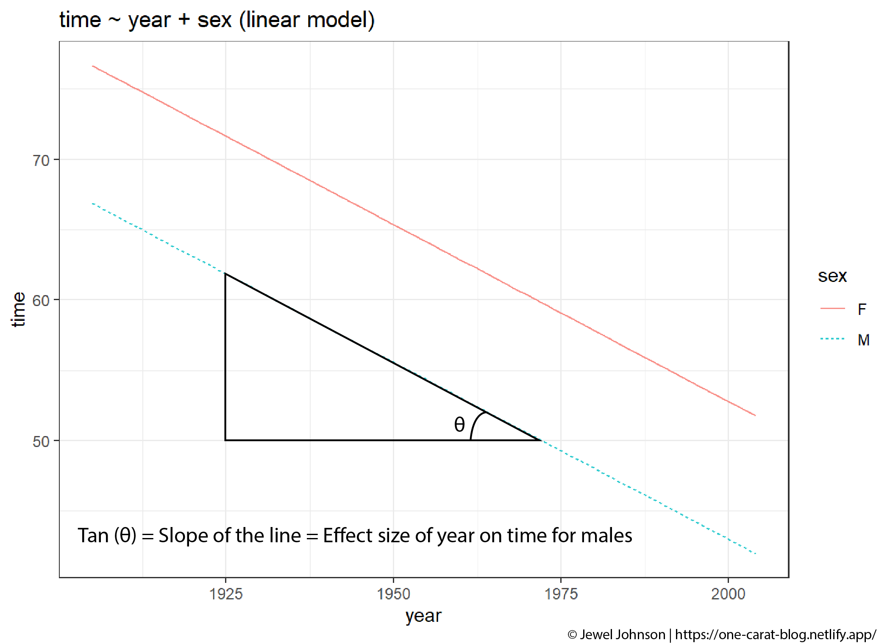 The slope of the line is the effect size of the x-axis exploratory variable on the y-axis response variable.
 The difference in y-intercepts of both the lines for a given x-axis exploratory variable value gives the effect size of the colour aesthetic on the y-axis response variable.
The difference in y-intercepts of both the lines for a given x-axis exploratory variable value gives the effect size of the colour aesthetic on the y-axis response variable.
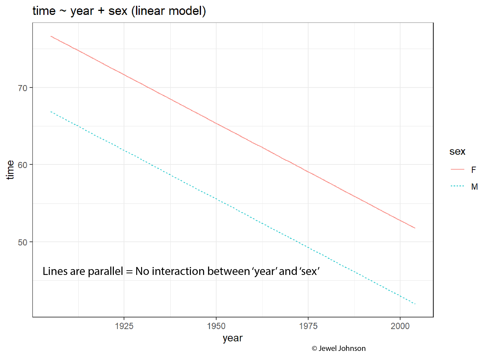 If lines are parallel, then there is no interaction between the x-axis variable and the colour aesthetic variable.
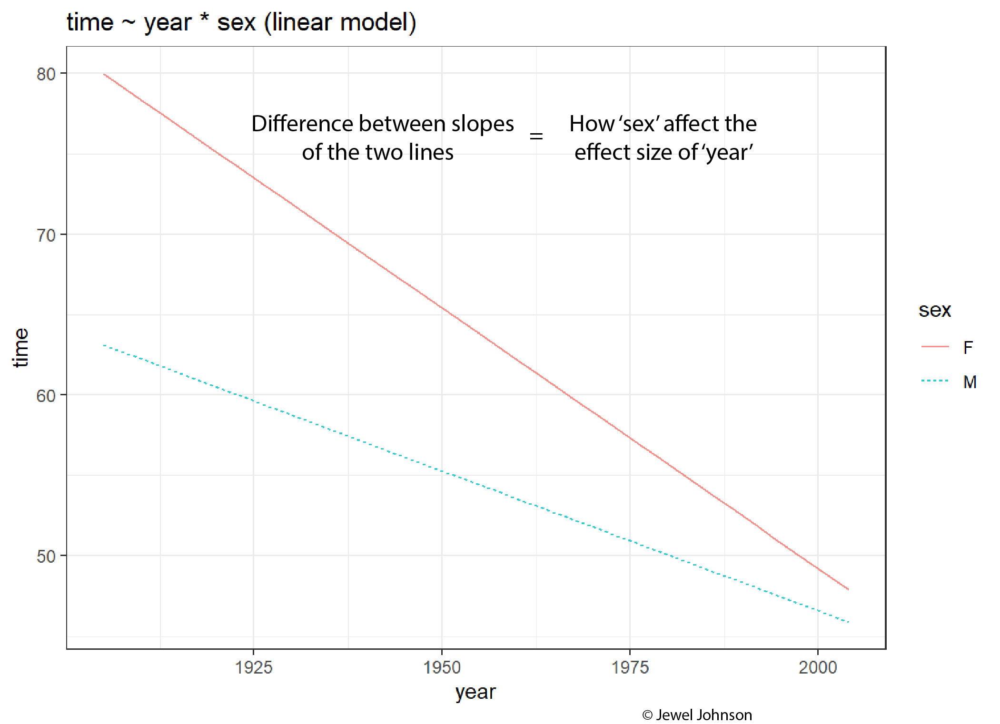
The difference between the values of the slopes tells how the colour aesthetic variable is affecting the effect size of the x-axis variable.
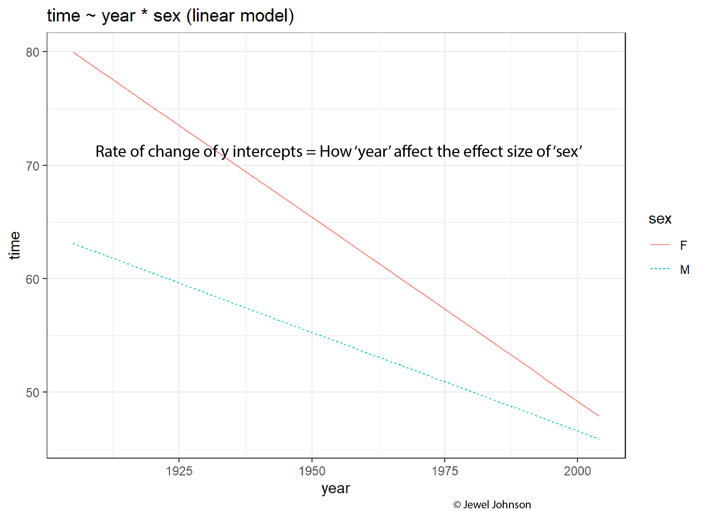
The rate of change of the y-intercepts tells how the x-axis variable is affecting the effect size of the colour aesthetic variable.
Now we are equipped with a strong intuition of how the interaction between variables affects the effect size of those variables and how they can be visualized from the plot.
6 Polynomial regression
Let us look at the Tadpoles dataset from the {mosaicModel} package in R. We saw this dataset while we learned about covariates in the previous tutorial. The dataset contains the swimming speed of tadpoles as a function of the water temperature and the water temperature at which the tadpoles had been raised. Let us plot the temperature at which the tadpoles were allowed to swim versus the maximum swimming speed.
if (!require(mosaicModel)) install.packages('mosaicModel')
library(mosaicModel)
library(ggplot2)
data(Tadpoles)
# Building a plot
Tadpoles |> ggplot(aes(rtemp, vmax)) + geom_point() + theme_bw()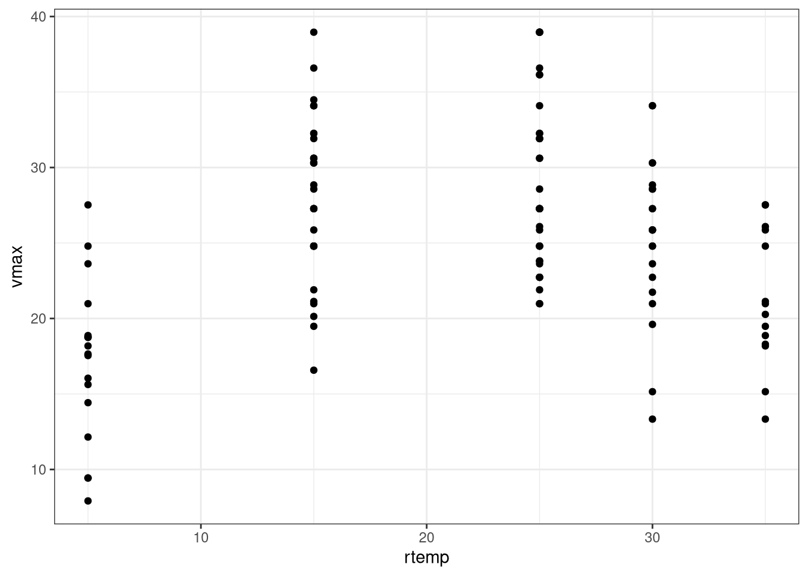
Now let us try building a linear model using vmax as the response variable and rtemp as the exploratory variable.
library(mosaicModel)
library(statisticalModeling)
data(Tadpoles)
# Building the linear model
model_lm <- lm(vmax ~ rtemp, data = Tadpoles)
# Plotting the model
fmodel(model_lm) + ggplot2::geom_point(data = Tadpoles) +
ggplot2::theme_bw()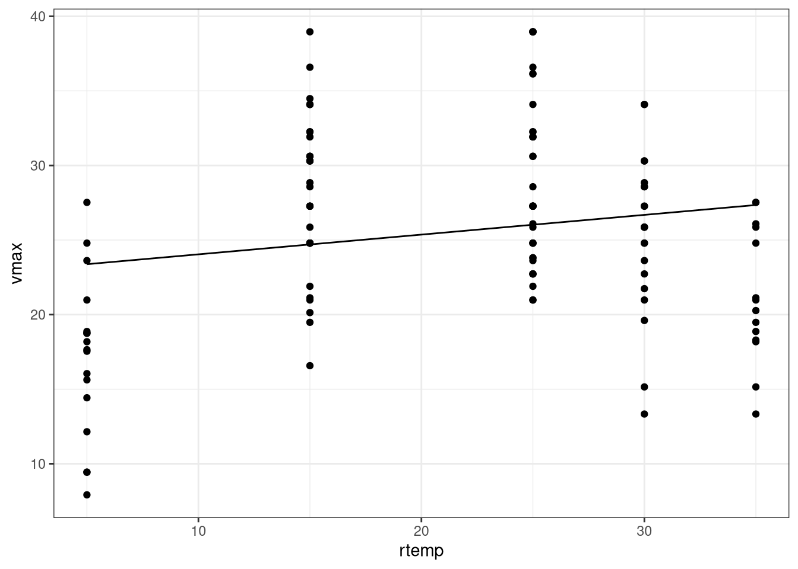
We see that the model out shows a weak relationship between the temperature at which the tadpoles were allowed to swim and the maximum swimming speed. But our intuition tells us that most of the maximum values for vmax peaked at temperatures of 15°C and 25°C hence, the line should curve upwards at these temperature regions. Essentially, instead of a straight line relationship, a parabolic relationship would be better for defining the relationship between rtemp and vmax. To tell the model to consider rtemp as a second-order variable, we use the I() function. So here, including I(rtemp^2) in the formula will inform the model to regress vmax against rtemp^2. You might be tempted to ask, why not just use rtemp^2 in the model formula? If we use vmax ~ rtemp^2 as the model formula, then notation wise it is equivalent to using vmax ~ rtemp * rtemp. If we run the model using this formula, the model will omit one of the rtemp variables as it is redundant to regress against a variable interacting with itself.
On a more technical note, in R, the symbols "+", "-", "*" and "^" are interpreted as formula operators. Therefore if rtemp^2 is used inside the formula, it will consider it as rtemp * rtemp. Thus to make things right, we use the I() function, so that R will interpret rtemp^2 as a new predictor with squared values.
Let us plot a polynomial model for the same question as above.
library(mosaicModel)
library(statisticalModeling)
data(Tadpoles)
# Building the linear model with rtemp in second order using I()
model_lm_2 <- lm(vmax ~ rtemp + I(rtemp^2), data = Tadpoles)
# Plotting the model
fmodel(model_lm_2) + ggplot2::geom_point(data = Tadpoles) +
ggplot2::theme_bw()
Much better plot than the earlier one. The same can also be achieved by using the poly() function. The syntax for it is; poly(variable, the order)
library(mosaicModel)
library(statisticalModeling)
data(Tadpoles)
# Building the linear model with rtemp in second order using poly()
model_lm_2 <- lm(vmax ~ poly(rtemp, 2), data = Tadpoles)
# Plotting the model
fmodel(model_lm_2) + ggplot2::geom_point(data = Tadpoles) +
ggplot2::theme_bw()
7 Total and partial change
From the previous tutorial and current tutorial, we built our notion of effect size bit by bit. In a gist, the flowchart below shows our efforts till now;
%%{init: {'securityLevel': 'loose', 'theme':'base'}}%%
graph TB
A[Understanding effect sizes] --o B(In the context of numerical explanatory variable)
B --> C(In the context of categorical explanatory variable)
C --> D(Magnitude and the sign of effect size value)
D --> E(Units of effect size)
E --> F(In the context of categorical response variable)
F --> G(How interaction terms affect effect sizes:<br>Understanding it from graphs)
G -.-> H(How interaction terms affect effect sizes:<br>Understanding it from calculations)
style H fill:#f96
subgraph Flowchart on current understanding of effect size
A
B
C
D
E
F
G
H
end
From the flowchart, we can appreciate the growing complexity in the understanding of effect size. We have already begun to understand effect sizes in the context of interaction terms as seen from previous graphs. Now let us try to calculate effect sizes with interaction terms.
We will use the HorsePrices dataset from the {Stat2Data} package in R. The dataset contains the price and related characteristics of horses listed for sale on the internet. The variables in the dataset include; Price = Price of the horse ($), HorseID = ID of the horse, Age = Age of the horse, Height = Height of the horse and Sex = Sex of the horse.
Suppose we are interested in the following questions
- How does the price of the horse change between sexes?
- How does the price of the horse change between sexes for the same height and age?
In the first question, we are checking for the price difference between the sexes. Here, when sex changes, the covariate variables; height and age of the horse will also change with sex. Therefore, here we are measuring the change in price by allowing all other variables in the model to change along with the exploratory variable sex. This is termed the ‘total change in price as sex changes’.
In the second question, unlike the first, we want to specifically see what is the price difference between sexes. To see this change, we keep height and age constant. Therefore, the only change seen in this case would be coming from the sex change. This is termed the ‘partial change of price as sex changes’.
For the first question, we will calculate the effect size of sex on price using the following lines of code. Since our question focuses on the total change in price with sex, we make a model by excluding all the other covariates that we want to change as sex changes.
# Loading libraries
if (!require(Stat2Data)) install.packages('Stat2Data')
library(Stat2Data)
library(statisticalModeling)
data("HorsePrices")
# Building the linear model
model_lm <- lm(Price ~ Sex, data = HorsePrices)
# Calculating the effect size
effect_size(model_lm, ~ Sex)The effect size value tells us that, changing from a male horse to a female, the price depreciates by 17225 dollars. Now to answer the second question, to calculate the partial change in price because of a change in sex, we build a model by including all the other covariates that we want to keep constant when we change sex.
# Loading libraries
if (!require(Stat2Data)) install.packages('Stat2Data')
library(Stat2Data)
library(statisticalModeling)
data("HorsePrices")
# Building the linear model
model_lm_partial <- lm(Price ~ Sex + Height + Age, data = HorsePrices)
# Calculating the effect size
effect_size(model_lm_partial, ~ Sex)The effect size value, in this case, tells us that, a male horse of age 6 and 16.5m in height will be 9928 dollars more costly than a female horse of the same physical attributes. Here it’s clear that for the given height and age, there is a price difference between male and female horses, something which we were trying to answer.
8 R-squared in terms of model output
So far we have seen metrics like the mean of the square of prediction error and likelihood values to evaluate a model’s predictive abilities. In terms of variables used in the model formula, we know how to interpret them using effect sizes. There is also another metric called R-squared (R^2).
One of the implications of a model is to account for variations seen within the response variable to the model output values. The R-squared value tells us how well this has been done. By definition;
R^2 = \frac{variance\,of\,model\,output\,values}{variance\,of\,response\,variable\,values} The R-squared value is always positive and is between 0 and 1. R-squared value of 1 means that the model accounted for all the variance seen within the actual dataset values of the response variable. R-squared value of 0 means that the model does not account for any variance seen in the response variable.
But the R-squared value has its flaws which we will see soon.
Let us calculate the R-squared value for some models. We will again use the HorsePrices dataset from the {Stat2Data} package in R. Let us build the earlier model again and calculate the R-squared value for the model. We will use the evaluate_model() function from the statisticalModeling package to get the predicted values. For now, we will use the training dataset itself as the testing dataset. We will use the var() formula to calculate the variance.
# Loading libraries
library(Stat2Data)
library(statisticalModeling)
data("HorsePrices")
# Building the linear model
model_lm <- lm(Price ~ Sex, data = HorsePrices)
# Getting the predicted values
model_lm_output <- evaluate_model(model_lm, data = HorsePrices)
# Calculating the R-squared value
r_squared <- with(data = model_lm_output, var(model_output)/var(Price))
# Printing R-squared value
r_squared[1] 0.3237929We get an R-squared value of 0.32. What this means is that 32% of the variability seen in the price of the horses is explained by the sex of the horses.
Now let us add in more explanatory variables and calculate the R-squared value. We will also remove any NA values in the model variables.
# Loading libraries
library(Stat2Data)
library(statisticalModeling)
data("HorsePrices")
# Removing NA values
HorsePrices_new <- tidyr::drop_na(HorsePrices)
# Building the linear model
model_lm <- lm(Price ~ Sex + Height + Age, data = HorsePrices_new)
# Getting the predicted values
model_lm_output <- evaluate_model(model_lm, data = HorsePrices_new)
# Calculating the R-squared value
r_squared <- with(data = model_lm_output, var(model_output)/var(Price))
# Printing R-squared value
r_squared[1] 0.4328061We got a higher R-squared value than before. Instead of 32%, we now can account for 43% of variability seen in price by all the other variables.
Does this mean that this model is better than the previous one? Before we jump in, let us do a fun little experiment. Let us see what happens if we add in random variables with no predicted power whatsoever to the model and run a model using them.
# Loading libraries
library(Stat2Data)
library(statisticalModeling)
data("HorsePrices")
# Removing NA values
HorsePrices_new <- tidyr::drop_na(HorsePrices)
# Adding random variable
set.seed(56)
HorsePrices_new$Random <- rnorm(nrow(HorsePrices_new)) > 0
# Building the linear model
model_lm_random <- lm(Price ~ Sex + Height + Age + Random, data = HorsePrices_new)
# Getting the predicted values
model_lm_random_output <- evaluate_model(model_lm_random, data = HorsePrices_new)
# Calculating the R-squared value
r_squared <- with(data = model_lm_random_output, var(model_output)/var(Price))
# Printing R-squared value
r_squared[1] 0.4437072We got an R-squared value of 0.44. The random variable should throw off the model output, then why did we get a higher R-squared value?
The R-squared value of a model will increase with increasing explanatory variables. To remind you again, the R-squared value comes partly from the model output and our model output comes from the design of the model. The model design includes selecting the appropriate explanatory variables which are up to the user. Therefore, stupidly adding variables which have no relationship whatsoever with the response variable can lead us to the wrong conclusion. Let us calculate the mean square of the prediction error for our last two models and compare them.
# Loading libraries
library(Stat2Data)
library(statisticalModeling)
data("HorsePrices")
# Removing NA values
HorsePrices_new <- tidyr::drop_na(HorsePrices)
# Adding random variable
set.seed(56)
HorsePrices_new$Random <- rnorm(nrow(HorsePrices_new)) > 0
# Building the linear model
model_lm <- lm(Price ~ Sex, data = HorsePrices_new)
# Building the linear model with random variable
model_lm_random <- lm(Price ~ Sex + Random, data = HorsePrices_new)
# Calculating the mean of square of prediction errors for trials
model_errors <- cv_pred_error(model_lm, model_lm_random)
# Calculating the mean of square of prediction errors
boxplot(mse ~ model, model_errors)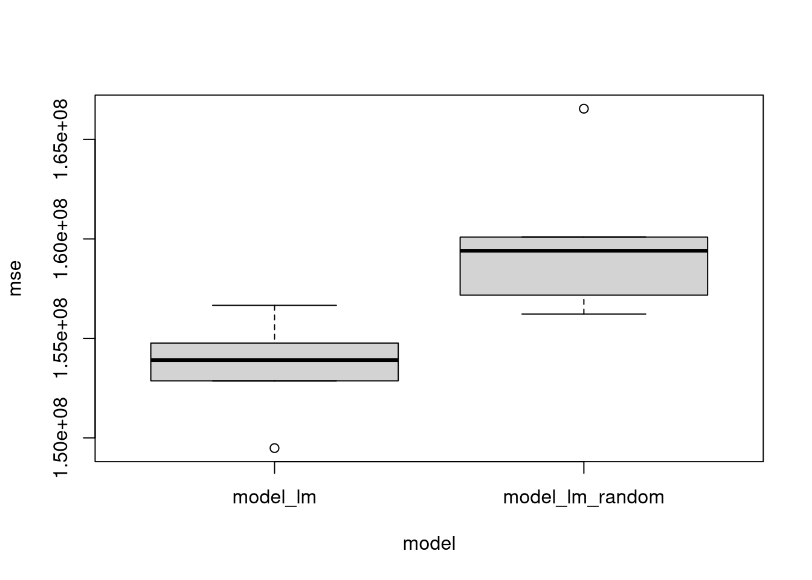
# Conducting t-test
t.test(mse ~ model, model_errors)
Welch Two Sample t-test
data: mse by model
t = -2.9348, df = 6.9143, p-value = 0.02218
alternative hypothesis: true difference in means between group model_lm and group model_lm_random is not equal to 0
95 percent confidence interval:
-11481425 -1221092
sample estimates:
mean in group model_lm mean in group model_lm_random
153536030 159887288 The plot and the t.test results can be used to check if the model with the random variable is indeed a poor one compared to the model without any random variable, something the R-squared value failed to report. Therefore R-squared value has its flaw, but it is widely used by people. Therefore, we should be very careful in interpreting the R-squared values of different models. Different models made from the same data can have different R-squared values.
9 R-squared in terms of residuals
From the above example, I mentioned that the R-squared value tells us how much percentage of the variability seen within the response variable is captured by the predicted model output values. Another way of seeing the same thing is through residuals. The residual is the distance between the regression line and the response variable value, or in other words, the difference between the fitted value and the corresponding response variable value. We can find R-squared using the following formula also;
R^2 = \frac{variance\,of\,response\,variable\,values - variance\,of\,residuals}{variance\,of\,response\,variable\,values}
We can use the following code to calculate the R-squared value via the above formula.
# Loading libraries
library(Stat2Data)
library(statisticalModeling)
data("HorsePrices")
# Removing NA values
HorsePrices_new <- tidyr::drop_na(HorsePrices)
# Building the linear model
model_lm <- lm(Price ~ Sex + Height + Age, data = HorsePrices_new)
# Getting the predicted values
model_lm_output <- evaluate_model(model_lm, data = HorsePrices_new)
# Calculating the R-squared value using model output values
r_squared_mo <- with(data = model_lm_output, var(model_output)/var(Price))
# Calculating the R-squared value using residuals
r_squared_res <- (var(HorsePrices_new$Price) - var(model_lm$residuals)) / var(HorsePrices_new$Price)
# Checking if both R-squared values are the same
r_squared_mo[1] 0.4328061r_squared_res[1] 0.4328061round(r_squared_mo) == round(r_squared_res)[1] TRUEAs you can see, they are both the same. Therefore, the R-squared value of 1 means that the model has zero residuals, which means that the model is a perfect fit; all data points lie on the regression line. R-squared value of 0 means that the variance of residuals is the same as that of the variance of the response variable. This means the explanatory variables we chose do not account for the variation seen within the response variable.
10 Bootstrapping and precision
All the datasets that we have worked on till now have been collected from a large population. Therefore, from these samples, we calculated different test statistics like the mean prediction error and effect sizes. Suppose we sample data again from the same population and calculate these test statistics, if they are close to earlier calculated values, then we can say that our test statistics are precise. But re-sampling the data is often costly and tedious to do. Then how can we check for precision? We can do that using a technique called bootstrapping. Similar to resampling, instead of collecting new samples from the population, we resample the data from the already collected data itself. Essentially, we are treating our existing dataset as a population dataset from which resampling occurs. Needless to say, this would only work effectively with large datasets.
%%{init: {'securityLevel': 'loose', 'theme':'base'}}%%
graph LR
A[Population] --> B(Random sample)
B --> C(Calculating sample statistics)
A --> D(Random sample)
D --> E(Calculating sample statistics)
A --> F("---")
F --> G("---")
A --> H(Random sample)
H --> I(Calculating sample statistics)
J[Population] --> K(Random sample)
J --> L(Random sample)
J --> M(Collected random sample)
M --> N(Resample 1)
M --> O(Resample 2)
M --> P(Resample 3)
J --> Q(Random sample)
subgraph Bootstrapping
J
K
L
M
N
O
P
Q
end
subgraph Resampling from the population
A
B
C
D
E
F
G
H
I
end
Let us perform a bootstrap trial code by code. We will be using the run17 dataset from the {cherryblossom} package in R. It’s a relatively large dataset that we can use to study how to do a bootstrap.
We will first build a model and then calculate a sample statistic, which in this case would be the effect size.
# Loading libraries
if (!require(cherryblossom)) install.packages('cherryblossom')
library(cherryblossom)
library(statisticalModeling)
library(dplyr)
# Filtering the data for 10 Mile marathon participants
run17_marathon <- run17 %>% filter(event == "10 Mile")
# Building a linear model
model_lm <- lm(net_sec ~ age + sex, data = run17_marathon)
# Calculating the effect size
effect_size(model_lm, ~ age)Using the sample() function in R, we will sample the row indices in the original dataset. Then using these row indices, we build a resampled dataset. Then using this resampled dataset, we will build a new model and then calculate the effect size.
# Loading libraries
library(cherryblossom)
library(statisticalModeling)
library(dplyr)
# Filtering the data for 10 Mile marathon participants
run17_marathon <- run17 %>% filter(event == "10 Mile")
# Collecting the row indices
row_indices <- sample(1:nrow(run17_marathon), replace = T)
# Resampling data using the rwo indices
resample_data <- run17_marathon[row_indices, ]
# Building a linear model
model_lm_resample <- lm(net_sec ~ age + sex, data = resample_data)
# Calculating the effect size
effect_size(model_lm_resample, ~ age)We get a slightly different effect size value in each case. If we repeat this process, we can get multiple effect size values that we can plot to get the sampling distribution of the effect size. doing this code by code is tedious and therefore we will automate this process using the ensemble() function in the statisticalModeling package in R. Using nreps inside the ensemble() function, we can specify how many times we want to resample the data. Normally, 100 resampling trials are performed.
# Loading libraries
library(cherryblossom)
library(statisticalModeling)
library(dplyr)
# Filtering the data for 10 Mile marathon participants
run17_marathon <- run17 %>% filter(event == "10 Mile")
# Building a linear model
model_lm <- lm(net_sec ~ age + sex, data = run17_marathon)
# Resampling 100 times
model_trials <- ensemble(model_lm, nreps = 100)
# Calculating the effect size for each resampled data
resampled_effect_sizes <- effect_size(model_trials, ~ age)
# Printing effect sizes
resampled_effect_sizesNow to estimate the precision in the effect size, we can calculate its standard deviation. This is the bootstrapped estimate of the standard error of the effect size, a measure of the precision of the quantity calculated on the original model. We can also plot a histogram of the effect size values we got from each of the trails to get the sampling distribution of the effect size.
# Calculating the standard error of effect size of age
sd(resampled_effect_sizes$slope)[1] 0.652797# Plotting a histogram
hist(resampled_effect_sizes$slope)
11 Scales and transformations
Depending on the class of the response variables, we can apply relevant transformations to change the scale of the variables to make the model better. We have seen how to use appropriate model architecture depending on the response variable, now we will see how to use relevant transformations.
11.1 Logarithmic transformation
In this exercise, we will see log-transformation which is mainly used when the response variable varies in proportion to its current size. For example, variables denoting population growth, exponential growth, prices or other money-related variables.
We will be using the Oil_history dataset from the statisticalModeling package in R. It denotes the historical production of crude oil, worldwide from 1880-2014. Let us first plot the data points and see how they are distributed. Here I am filtering the data till the year 1980 to get a nice looking exponential growth curve for the exercise.
library(statisticalModeling)
library(ggplot2)
library(dplyr)
data("Oil_history")
# Plotting the data points
Oil_history %>% filter(year < 1980) %>%
ggplot(aes(year, mbbl)) + geom_point() +
labs(y = "mbbl (oil production in millions of barrels)") +
theme_bw()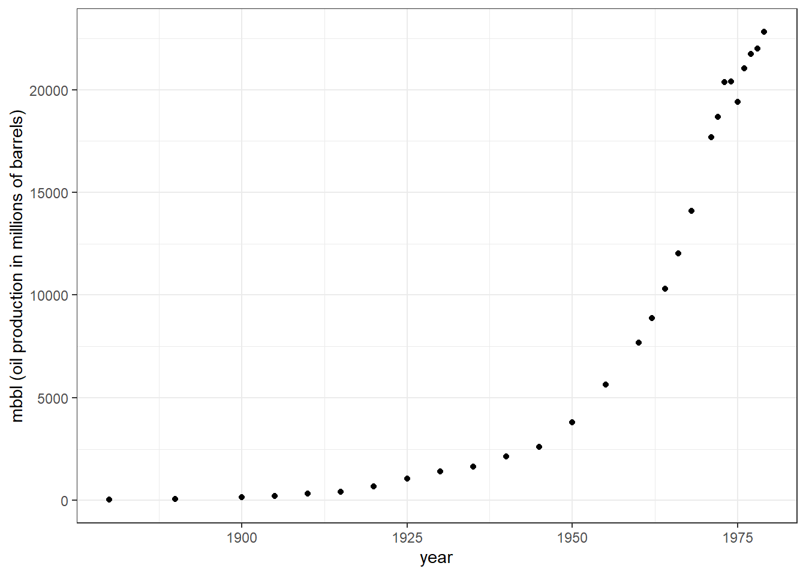
You can see exponential growth in oil barrel production with increasing years. First, we will build a linear model looking at how years influenced change in barrel production. Here, mbbl would be our response variable and year our explanatory variable. Secondly, we will build another linear model but here our response variable; mbbl will be log-transformed. You can compare the plots using the slider.
library(statisticalModeling)
library(ggplot2)
library(dplyr)
data("Oil_history")
# Filtering values till 1980
Oil_1980 <- Oil_history %>% filter(year < 1980)
# Building a linear model
model_lm <- lm(mbbl ~ year, data = Oil_1980)
# Plotting the linear model
fmodel(model_lm) + ggplot2::geom_point(data = Oil_1980) +
ggplot2::labs(y = "mbbl (oil production in millions of barrels)",
title = "Oil production in millions of barrels ~ Year") +
theme_bw()
# Transforming mbbl values to logarithmic scale
Oil_1980$log_mbbl <- log(Oil_1980$mbbl)
# Building a linear model with log transformed response variable
model_lm_log <- lm(log_mbbl ~ year, data = Oil_1980)
# Plotting the linear model with log transformed response variable
fmodel(model_lm_log) + ggplot2::geom_point(data = Oil_1980) +
ggplot2::labs(y = "log(mbbl) [oil production in millions of barrels]",
title = "log(Oil production in millions of barrels) ~ Year") +
theme_bw()library(statisticalModeling)
library(ggplot2)
library(dplyr)
data("Oil_history")
# Filtering values till 1980
Oil_1980 <- Oil_history %>% filter(year < 1980)
# Building a linear model
model_lm <- lm(mbbl ~ year, data = Oil_1980)
# Plotting the linear model
fmodel(model_lm) + ggplot2::geom_point(data = Oil_1980) +
ggplot2::labs(y = "mbbl (oil production in millions of barrels)",
title = "Oil production in millions of barrels ~ Year") +
theme_bw()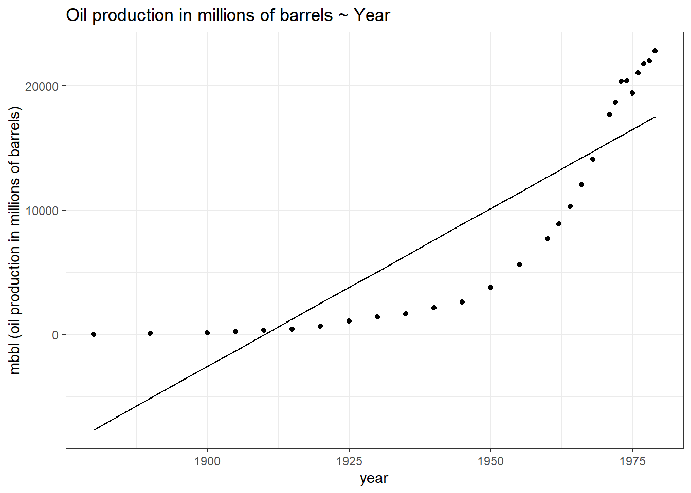
# Transforming mbbl values to logarithmic scale
Oil_1980$log_mbbl <- log(Oil_1980$mbbl)
# Building a linear model with log transformed response variable
model_lm_log <- lm(log_mbbl ~ year, data = Oil_1980)
# Plotting the linear model with log transformed response variable
fmodel(model_lm_log) + ggplot2::geom_point(data = Oil_1980) +
ggplot2::labs(y = "log(mbbl) [oil production in millions of barrels]",
title = "log(Oil production in millions of barrels) ~ Year") +
theme_bw()
In the first graph, our linear model does not fit the values perfectly as opposed to the model which used the log transformation of the response variable. Why the second model fits better because initially mbbl and Year had an exponential relationship. But after log transformation, the relationship became a linear one and thus the model performs better. We can calculate the mean predictive error between these two models and see which one does a better job at predicting.
library(statisticalModeling)
library(dplyr)
data("Oil_history")
# Filtering values till 1980
Oil_1980 <- Oil_history %>% filter(year < 1980)
# Transforming mbbl values to logarithmic scale
Oil_1980$log_mbbl <- log(Oil_1980$mbbl)
# Building a linear model
model_lm <- lm(mbbl ~ year, data = Oil_1980)
# Building a linear model with log transformed response variable
model_lm_log <- lm(log_mbbl ~ year, data = Oil_1980)
# Evaluating the model
predict_lm <- evaluate_model(model_lm, data = Oil_1980)
predict_lm_log <- evaluate_model(model_lm_log, data = Oil_1980)
# Transforming the model output values back to normal
predict_lm_log$model_output_nonlog <- exp(predict_lm_log$model_output)
# Calculating the mean square errors
mean((predict_lm$mbbl - predict_lm$model_output)^2, na.rm = TRUE)[1] 17671912mean((predict_lm_log$mbbl - predict_lm_log$model_output_nonlog)^2, na.rm = TRUE)[1] 1861877We get a much smaller mean predictive error for the model with log transformation as compared to the model which does not have log transformation.
Let us calculate the effect size for these two models
library(statisticalModeling)
data("Oil_history")
# Building a linear model
model_lm <- lm(mbbl ~ year, data = Oil_1980)
# Building a linear model with log transformed response variable
model_lm_log <- lm(log_mbbl ~ year, data = Oil_1980)
# Calculating the effect sizes
effect_size(model_lm, ~ year)effect_size(model_lm_log, ~ year)For the model without a log-transformed response variable, we have slope = 254. This means, that from the year 1958 to 1988, the oil barrels production increased by 254 million barrels per year. What about the effect size of the model with a log-transformed response variable?
The effect size for a log-transformed value is in terms of the change of logarithm per unit of the explanatory variable. It’s generally easier to interpret this as a percentage change per unit of the explanatory variable, which also involves an exponential transformation: 100 * (exp(__effect_size__) - 1)
library(statisticalModeling)
data("Oil_history")
# Building a linear model with log transformed response variable
model_lm_log <- lm(log_mbbl ~ year, data = Oil_1980)
# Calculating the effect size
effect_lm_log <- effect_size(model_lm_log, ~ year)
# Converting effect size to percentage change
100 * (exp(effect_lm_log$slope) - 1)[1] 6.751782We get a value of 6.75. This means that barrel production increased by 6.75% each year from 1958 to 1988.
We can take this one step further by using the bootstrapping method and thereby calculate the effect size. Then, after converting effect size to percentage change, we can calculate the 95% confidence interval on the percentage change in oil barrel production per year.
library(statisticalModeling)
data("Oil_history")
# Building a linear model with log transformed response variable
model_lm_log <- lm(log_mbbl ~ year, data = Oil_1980)
# Bootstrap replications: 100 trials
bootstrap_trials <- ensemble(model_lm_log, nreps = 100, data = Oil_1980)
# Calculating the effect size
bootstrap_effect_sizes <- effect_size(bootstrap_trials, ~ year)
# Converting effect size to percentage change
bootstrap_effect_sizes$precentage_change <- 100 * (exp(bootstrap_effect_sizes$slope) - 1)
# Calculating 95% confidence interval
with(bootstrap_effect_sizes, mean(precentage_change) + c(-2, 2) * sd(precentage_change))[1] 6.496748 7.003000Nice! We got a narrow 95% confidence interval of [6.50, 7.00].
11.2 Rank transformation
We found that log transformation worked best for datasets showcasing exponential growth or where depicting percentage change of response variables makes more sense. Likewise, there is another transformation called rank transformation which works best with a dataset that deviates from normality and has outliers.
Consider the dataset HorsePrices from the Stat2Data package in R. We will plot the prices for female horses with their age.
library(Stat2Data)
library(ggplot2)
# Plotting the graph
HorsePrices %>% filter(Sex == "f") %>%
ggplot(aes(Age, Price)) + geom_point() + theme_bw()
You can see that there are two outliers in the plot for y > 30000, let us label them.
library(Stat2Data)
library(ggplot2)
# Making a function to identify outliers
is_outlier <- function(x) {
x > 30000
}
# Filtering female horses and labelling the outliers
female_horses <- HorsePrices %>% filter(Sex == "f") %>%
mutate(outliers = if_else(is_outlier(Price), Price, rlang::na_int))
# Plotting the graph
female_horses %>% filter(Sex == "f") %>%
ggplot(aes(Age, Price)) + geom_point() +
geom_text(aes(label = outliers), na.rm = TRUE, vjust = 1, col = "red") +
theme_bw()
Now let us build a linear model with Price as the response variable and Age as the explanatory variable and then plot the model.
library(Stat2Data)
library(ggplot2)
library(statisticalModeling)
# Making a function to identify outliers
is_outlier <- function(x) {
x > 30000
}
# Filtering female horses and labelling the outliers
female_horses <- HorsePrices %>% filter(Sex == "f") %>%
mutate(outliers = if_else(is_outlier(Price), Price, rlang::na_int))
# Building the linear model
model_lm <- lm(Price ~ Age, data = female_horses)
# Plotting the model
fmodel(model_lm) + geom_point(data = female_horses) +
geom_text(aes(label = outliers), na.rm = TRUE, vjust = 1,
col = "red", data = female_horses) +
scale_y_continuous(breaks = seq(0,50000,10000), limits = c(0, 50000)) +
labs(title = "Linear model") +
theme_bw()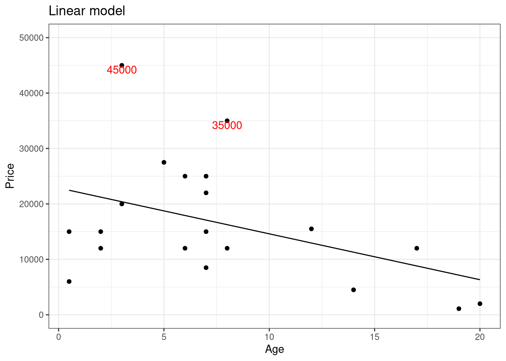
The outliers might be causing an effect on the slope of the regression line. This is where rank transformation comes into place. Using the rank() in R, we replace the actual value with the rank which that value occupies when arranged from ascending to descending order. Let us see how the plot will be after rank transformation.
library(Stat2Data)
library(ggplot2)
library(statisticalModeling)
# Making a function to identify outliers via ranks
is_outlier <- function(x) {
x > 18
}
# Filtering female horses
female_horses <- HorsePrices %>% filter(Sex == "f")
# Assigning ranks
female_horses$price_rank <- rank(female_horses$Price)
# Labelling outliers via ranks
female_horses<- female_horses %>%
mutate(outliers = if_else(is_outlier(price_rank), Price, rlang::na_int))
# Building the linear model
model_lm_rank <- lm(price_rank ~ Age, data = female_horses)
# Plotting the model
fmodel(model_lm_rank) + geom_point(data = female_horses) +
geom_text(aes(label = outliers), na.rm = TRUE, vjust = 1,
col = "red", data = female_horses) +
labs(y = "Ranked Price", title = "Linear model with ranked price") +
theme_bw()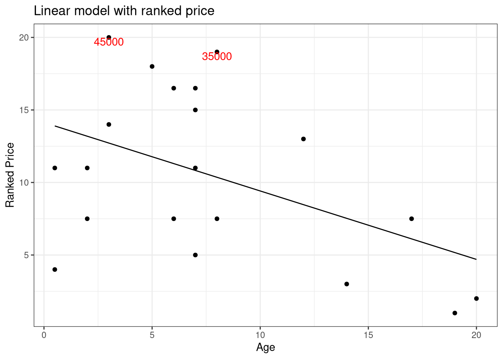
A quick comparison of both the graphs shows that the slope of the regression line has changed. For now, let us not worry if this made the model better. We will see in greater detail rank transformation in the coming tutorials. For now, keep in mind that rank transformation works best for data with outliers.
12 Collinearity (also called Multicollinearity)
Collinearity is a phenomenon that occurs when two or more explanatory variables used in the model are in a linear relationship with each other. Consider a dataset with ‘poverty’ as a variable, let’s say we are looking at the association between ‘poverty’ and other variables such as ‘education’ and ‘income’. Now common sense tells us that, most often, education and income have a linear relationship with each other. Highly educated people often will have a high income. Therefore, changes seen in poverty status explained by education might often be a result of income rather than education itself and vice versa. In this case, we say that the variables ‘education’ and ‘income’ are colinear.
Let us look at a real-life example. Let us use the SAT dataset from the {mosaicData} package in R. The SAT data looks at the link between SAT scores and measures of educational expenditures.
We will build a linear model using sat as the response variable. The sat variable denotes the average total SAT score. We will also use expend as the explanatory variable. The expend variable denotes expenditure per pupil in average daily attendance in public elementary and secondary schools, 1994-95 (in thousands of US dollars). We will also do bootstrapping and find the 95% confidence interval.
library(mosaicData)
library(statisticalModeling)
library(ggplot2)
# Building a linear model
model_lm <- lm(sat ~ expend, data = SAT)
# Plotting the model
fmodel(model_lm) + theme_bw()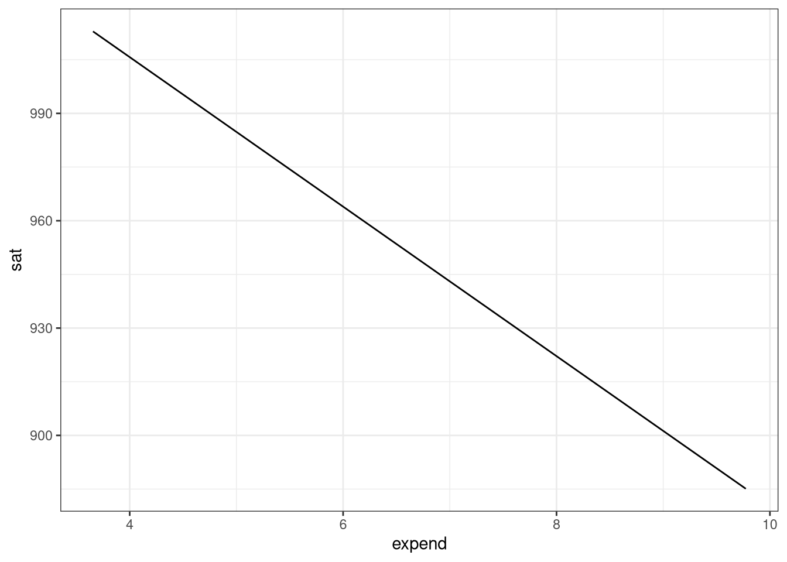
# Bootstrap replications: 100 trials
bootstrap_trials <- ensemble(model_lm, nreps = 100)
# Calculating the effect sizes of salary from the bootstrap samples
bootstrap_effect_sizes <- effect_size(bootstrap_trials, ~ expend)
# Calculating the 95% confidence interval
with(bootstrap_effect_sizes, mean(slope) + c(-2, 2) * sd(slope))[1] -33.765958 -8.135405We get a rather surprising plot and a 95% confidence interval value. The plot suggests that with increasing college expenditure, sat scores reduce. The confidence interval is adding evidence to it by showing that the mean of the effect size lies within a negative interval. So what’s happening? Should we believe our model?
Before we decide on anything, let us add a covariate to the model. We will add the variable frac to the model which denotes the percentage of all eligible students taking the SAT. Let us build the model.
library(mosaicData)
library(statisticalModeling)
library(ggplot2)
# Building a linear model
model_lm_cov <- lm(sat ~ expend + frac, data = SAT)
# Plotting the model
fmodel(model_lm_cov) + theme_bw()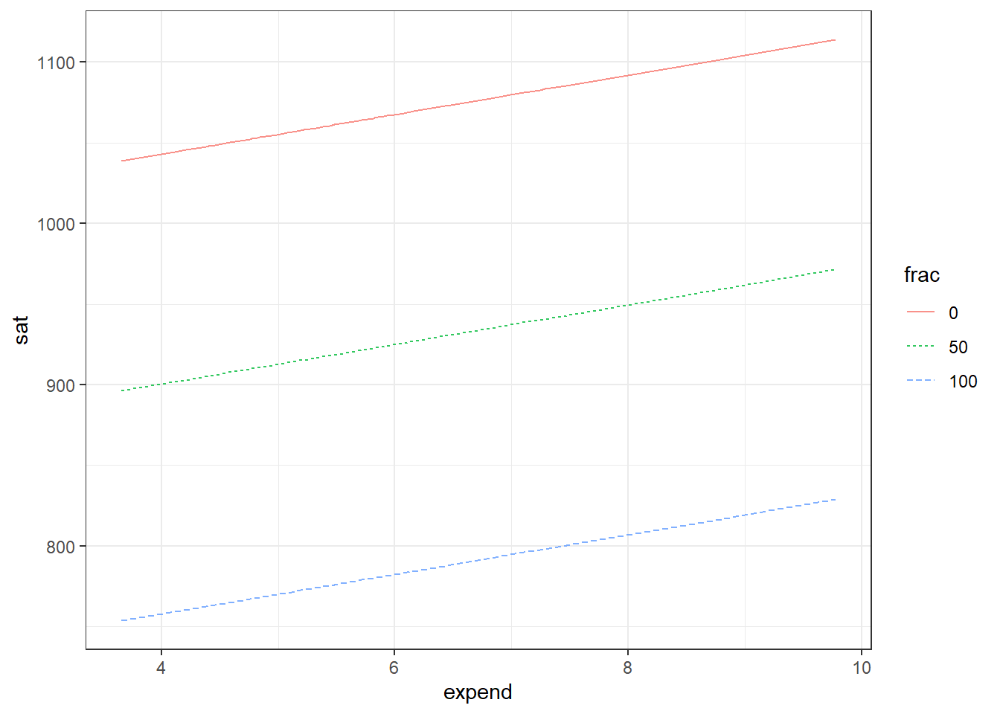
# Bootstrap replications: 100 trials
bootstrap_trials_cov <- ensemble(model_lm_cov, nreps = 100)
# Calculating the effect sizes of salary from the bootstrap samples
bootstrap_effect_sizes_cov <- effect_size(bootstrap_trials, ~ expend)
# Calculating the 95% confidence interval
with(bootstrap_effect_sizes_cov, mean(slope) + c(-2, 2) * sd(slope))[1] -33.765958 -8.135405Guess we got quite the opposite result now. Let us calculate the mean prediction error using the cross-validation technique and see which of these models is better.
library(mosaicData)
library(statisticalModeling)
# Building a linear model
model_lm <- lm(sat ~ expend, data = SAT)
# Building a linear model with covariate
model_lm_cov <- lm(sat ~ expend + frac, data = SAT)
# Calculating the m.s.e values
trials_mse <- cv_pred_error(model_lm, model_lm_cov)
# Printing mse
trials_mse# Doing a t.test
t.test(mse ~ model, trials_mse)
Welch Two Sample t-test
data: mse by model
t = 142.26, df = 5.3575, p-value = 8.603e-11
alternative hypothesis: true difference in means between group model_lm and group model_lm_cov is not equal to 0
95 percent confidence interval:
3704.738 3838.352
sample estimates:
mean in group model_lm mean in group model_lm_cov
4921.496 1149.951 From the t.test results, the model with the covariate has a lower mean prediction error value as compared to the model without the covariate. Adding frac as the covariate seems to significantly improve our model.
The reason why I emphasized covariates is because collinearity is introduced to the model as a result of our choice of covariates. To check for collinearity, we build a linear model with our group of explanatory variables that we want to check. Then we will find the R-squared value from the model, the greater the R-squared value, the greater the collinearity between these variables. Let us find the collinearity between expend and frac. We can either use the summary() function to get the model summary and then get the R-squared value from the summary or use the rsquared() function from the {mosaic} package in R.
if (!require(mosaic)) install.packages('mosaic')
library(mosaicData)
library(mosaic)
# Building a linear model
model_cov <- lm(expend ~ frac, data = SAT)
# Getting the summary of the model to get Rsquared value
summary(model_cov)
Call:
lm(formula = expend ~ frac, data = SAT)
Residuals:
Min 1Q Median 3Q Max
-1.7951 -0.7441 -0.2177 0.5983 2.8197
Coefficients:
Estimate Std. Error t value Pr(>|t|)
(Intercept) 4.84179 0.26101 18.550 < 2e-16 ***
frac 0.03018 0.00592 5.097 5.78e-06 ***
---
Signif. codes: 0 '***' 0.001 '**' 0.01 '*' 0.05 '.' 0.1 ' ' 1
Residual standard error: 1.109 on 48 degrees of freedom
Multiple R-squared: 0.3512, Adjusted R-squared: 0.3377
F-statistic: 25.98 on 1 and 48 DF, p-value: 5.781e-06# Getting the Rsquared value
rsquared(model_cov)[1] 0.3512072From the model summary, the value that we are interested in is given in the ‘Multiple R-squared’ section, which is 0.35, which is the same as the output given by the rsquared() function. The value of 0.35 means that 35% of the variation seen in the expend variable is explained by frac. This suggests that there is some level of redundancy between the expend and frac. Greater the R-squared value, the greater the redundancy between the variables.
R-squared is also represented in a different way called ‘variance inflation factor (VIF)’ which measures the factor by which the correlations amongst the predictor variables inflate the variance of the standard error of the effect size. Okay, that was a handful, let us see what this means. First, let us see the formula for VIF;
VIF = \frac{1}{1-R^2}
Here, if we have an R-squared value of 0, which means there is no collinearity between the variables, then VIF would be 1. Let us assume we get a VIF value of 2. In the current context, this means that the variance of the effect sizes calculated from bootstrap trials is increased by a factor of 2. If variance increases, then the standard error associated with the effect sizes increases and thereby it will lead to reduced precision. A result of collinearity is often getting a wider confidence interval thereby giving us an unprecise estimation of; for example effect sizes in this case.
If we take the square root of VIF, then we get the ‘standard error inflation factor’ which tells us by how much factor the standard error of the effect sizes calculated from bootstrap trails inflate.
Let us see all this in action from the codes below;
We will add another covariate to our earlier model; salary. The variable salary denotes the estimated average annual salary of teachers in public elementary and secondary schools.
Let us first check for collinearity between the salary and expend.
library(mosaic)
library(mosaicData)
# Building a linear model to check collinearity
model_collinear_salary <- lm(expend ~ salary, data = SAT)
# Getting the Rsquared value
rsquared(model_collinear_salary)[1] 0.7565547Looks like we opened Pandora’s box. Now let us build two models, one without salary and one with salary and, see how the prediction error of the effect sizes changes. The two models will have the SAT scores as the response variable. We will calculate the standard error of effect sizes within the effect_size() formula by assigning bootstrap = TRUE.
library(statisticalModeling)
library(mosaicData)
# Model 1 without salary
model_1 <- lm(sat ~ expend, data = SAT)
# Model 2 with salary
model_2 <- lm(sat ~ expend + salary, data = SAT)
# Calculating effect sizes and standard error via bootstrapping
head(effect_size(model_1, ~ expend, bootstrap = TRUE), n = 1)head(effect_size(model_2, ~ expend, bootstrap = TRUE), n = 1)You can see that the standard error has increased which is due to the effect of collinearity between expend and salary.
The statisticalModeling package comes with the collinearity() function which can be used to calculate how much the effect size might (at a maximum) be influenced by collinearity with the other explanatory variables. Essentially, the collinearity() function calculates the square root of VIF which denotes the inflation of standard errors. Let us check the collinearity between expend and salary variables.
library(statisticalModeling)
library(mosaicData)
# Calculating the collinearity
collinearity(~ expend + salary, data = SAT)Interaction between collinear variables can also increase the standard error of effect size.
library(statisticalModeling)
library(mosaicData)
# Model 3 with salary interaction
model_3 <- lm(sat ~ expend * salary, data = SAT)
# Calculating effect sizes and standard error via bootstrapping
head(effect_size(model_3, ~ expend, bootstrap = TRUE), n = 1)As you can see, we got a higher standard error value as compared to model_1. Let us also calculate the mean prediction error for the three models we created.
library(statisticalModeling)
library(mosaicData)
library(dplyr)
# Building the models
model_1 <- lm(sat ~ expend, data = SAT)
model_2 <- lm(sat ~ expend + salary, data = SAT)
model_3 <- lm(sat ~ expend * salary, data = SAT)
# Calculating the mean prediction error for 100 trials
model_mse <- cv_pred_error(model_1, model_2, model_3, ntrials = 100)
# Calculating the mean and sd of mse
model_mse_mean <- model_mse %>% group_by(model) %>%
summarise(mean = mean(mse),
sd = sd(mse))
# Printing the mean and sd of mse
model_mse_meanSince I did not set seed, you might not get the same results as I got. But essentially we can use the mean prediction error values to also choose the better model out of the three.
In the end, from these two tutorials, we can sum up our criteria for model comparison. We should check for the following while doing the comparison;
- Cross-validated prediction error
- Inflation due to collinearity
- The standard error of effect size
13 Conclusion
First of all, congratulations on completing the intermediate statistical modelling tutorial (bonus points if you completed the introduction tutorial also). In a nutshell, this is what we have learned from this tutorial;
Interpreting effect size when the response variable is categorical
Plotting model output using the
fmodel()function from the{statisticalModeling}packageInteraction terms
Polynomial regression
Total and partial change
Interpreting the R-squared value in terms of model output and residuals
Bootstrapping technique to measure the precision of model statistics
Scales and transformation
- Log transformation
- Rank transformation
Collinearity
You have mastered almost everything that is there in linear modelling. Congratulations! But, the journey is not over. The next stop is ’Generalized Linear Models in R`. This is a realm where we deal with complex datasets that cannot be analysed by our trusty linear regression models. Anyway, that’s a problem for tomorrow. Practice the concepts you gained from both the tutorials and come ready for the next tutorial ✌️
Reuse
Citation
BibTeX citation:
@online{johnson2022,
author = {Johnson, Jewel},
title = {Intermediate Statistical Modelling in {R}},
date = {2022-08-11},
url = {https://sciquest.netlify.app//tutorials/stat_model/inter_stat_model.html},
langid = {en}
}
For attribution, please cite this work as:
Johnson, Jewel. 2022. “Intermediate Statistical Modelling in
R.” August 11, 2022. https://sciquest.netlify.app//tutorials/stat_model/inter_stat_model.html.